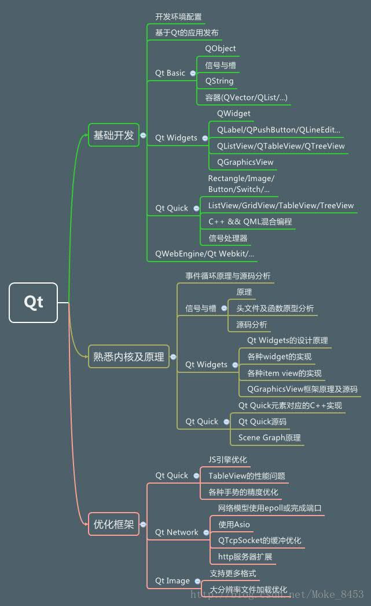
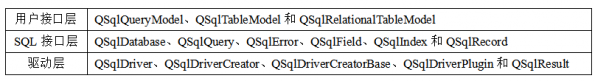

version:
1 2 3 4 Qt Creator 4.5.1 Based on Qt 5.10.1 (MSVC 2015, 32 bit) Built on Feb 10 2018 04:20:12 From revision 24cd0b1cd6
操作系统: windows10 Pro 1803
qt介绍 框架架构解析 
公用配置 创建的文件模板修改 我修改的是D:\ProgramData\Qt\Qt5.10.1\Tools\QtCreator\share\qtcreator\templates\wizards\classes\cpp目录下的两个文件，可以实现修改文件创建的模板
语法学习 QString 格式化字符串 1 QString test = QString ().sprintf ("%s" , "https://githubwyb.github.io/" );
与std::string的相互转化 1 2 3 4 5 6 7 QString qStr = "https://githubwyb.github.io/" ; std::string str = qStr.toStdString (); std::string str = "https://githubwyb.github.io/" ; QString qStr = QString::fromStdString (str);
QDebug 将打印格式化输出到文件 初始化需要将messageHandler自定义一下，qt提供下面的方法进行自定义 1 2 typedef void (*QtMessageHandler) (QtMsgType, const QMessageLogContext &, const QString &) Q_CORE_EXPORT QtMessageHandler qInstallMessageHandler (QtMessageHandler) ;
1 2018-10-17 16:17:28[D][main.cpp:11 (int qMain(int, char**))] Hello, qt
1 2 3 4 5 6 7 8 9 10 11 12 13 14 15 16 17 18 19 20 21 22 23 24 25 26 27 28 29 30 31 32 33 34 35 36 37 38 39 40 41 42 43 44 45 46 47 48 49 50 51 52 53 const char *splitFileName (const char *fileName) const char *pChar = fileName; pChar = (strrchr (pChar, '/' ) ? strrchr (pChar, '/' ) + 1 : (strrchr (pChar, '\\' ) ? strrchr (pChar, '\\' ) + 1 : pChar)); return pChar; } void myMessageOutput (QtMsgType type, const QMessageLogContext &context, const QString &msg) static QMutex mutex; mutex.lock (); QString text = QDateTime::currentDateTime ().toString ("yyyy-MM-dd hh:mm:ss" ); switch (type) { case QtDebugMsg: text += QString ("[D]" ); break ; case QtInfoMsg: text += QString ("[I]" ); break ; case QtWarningMsg: text += QString ("[W]" ); break ; case QtCriticalMsg: text += QString ("[E]" ); break ; case QtFatalMsg: text += QString ("[F]" ); } text += QString ("[%1:%2 (%3)] %4" ).arg (splitFileName (context.file)).arg (context.line).arg (context.function).arg (msg); QString logFile = QCoreApplication::applicationDirPath () + "/log.txt" ; QFile file (logFile) ; file.open (QIODevice::WriteOnly | QIODevice::Append); if (file.size () >= 10 * 1024 * 1024 ) { QFile::remove ("log_00.txt" ); file.copy ("log_00.txt" ); file.resize (0 ); } QTextStream text_stream (&file) ; text_stream << text << "\r\n" ; file.flush (); file.close (); mutex.unlock (); }
注意事项 release版本需要在工程中.pro文件定义一个宏,然后，重新qmake，编译，不然文件和行数相关信息无法打印。 1 DEFINES += QT_MESSAGELOGCONTEXT
去除打印的引号 只能在debug版本使用，release版本会出错，暂未找解决方案 1 2 QString str = "Hello, world" ; qDebug () << qPrintable (str);
1 2 QString str = "https://githubwyb.github.io/" ; qDebug ("%s" , str.toLatin1 ().data ());
目录相关接口 创建目录 创建目录使用QDir接口，有两个函数mkdir和mkpath。区别如下：
mkdir：上层目录不存在时，创建会失败。目录已经存在时会返回false。 mkpath：上层目录不存在也没关系，自动一起创建。目录已经存在时会返回true。 1 2 QDir ().mkdir (path);QDir ().mkpath (path);
数据库接口 简介 Qt中的Qt SQL模块提供了对数据库的支持，该模块中的众多类基本上可以分为三层，如下图所示。

驱动层为具体的数据库和SQL接口层之间提供了底层的桥梁； SQL接口层提供了对数据库的访问，其中的QSqlDatabase类用来创建连接，QSqlQuery类可以使用SQL语句来实现与数据库交互，其他几个类对该层提供了支持； 用户接口层的几个类实现了将数据库中的数据链接到窗口部件上，它们是更高层次的抽象，即便不熟悉SQL也可以操作数据库。 如果要使用Qt SQL模块中的这些类，需要在项目文件（.pro文件）中添加QT += sql这一行代码。对应数据库部分的内容，大家可以在帮助中查看SQL Programming关键字。
列出可用数据库驱动 1 2 3 4 5 6 7 8 9 10 11 12 13 14 #include <QCoreApplication> #include <QSqlDatabase> #include <QDebug> #include <QStringList> int main (int argc, char *argv[]) QCoreApplication a (argc, argv) ; qDebug () << "Available drivers:" ; QStringList drivers = QSqlDatabase::drivers (); foreach(QString driver, drivers) qDebug () << driver; return a.exec (); }
简单数据库应用 1 2 3 4 5 6 7 8 9 10 11 12 13 14 15 16 17 18 19 20 21 22 23 24 25 26 27 28 29 30 31 32 33 34 35 36 37 38 #include <QCoreApplication> #include <QSqlDatabase> #include <QDebug> #include <QSqlQuery> int main (int argc, char *argv[]) QCoreApplication a (argc, argv) ; QSqlDatabase db = QSqlDatabase::addDatabase ("QSQLITE" ); db.setDatabaseName (":memory:" ); if (!db.open ()) return false ; QSqlQuery query (db) ; query.exec ("create table student(id int primary key,name varchar)" ); query.exec ("insert into student values(1,'xiaogang')" ); query.exec ("insert into student values(2,'xiaoming')" ); query.exec ("insert into student values(3,'xiaohong')" ); query.exec ("select id,name from student where id >= 2" ); while (query.next ()) { int value0 = query.value (0 ).toInt (); QString value1 = query.value (1 ).toString (); qDebug () << value0 << value1 ; } return a.exec (); }
QSqlQuery 初始化连接数据库 1 2 3 4 5 6 7 8 9 10 QSqlDatabase db = QSqlDatabase::addDatabase ("QSQLITE" ); db.setDatabaseName ("wangyubo.db" ); if (!db.open ()) { return -1 ; } QSqlQuery sqlQuery (db) ;
执行一条语句并打印错误信息 1 2 3 4 5 6 7 8 9 10 11 12 13 14 QSqlQuery sqlQuery (db) ;bool result = sqlQuery.exec ("CREATE TABLE IF NOT EXISTS Account (" "id TEXT PRIMARY KEY UNIQUE, " "username TEXT, " "password TEXT, " "nickname TEXT, " "lastLoginTime INTEGER, " "createTime INTEGER, " "configs TEXT)" ); if (!result) { LOG_ERROR ("Create table Account failed, code %d, %s" , sqlQuery.lastError ().type (), sqlQuery.lastError ().text ().toLatin1 ().data ()); return -1 ; } LOG_INFO ("Create table Account success" );
获取查询的结果 1 2 3 4 5 6 7 8 9 10 11 12 13 14 15 16 17 18 19 20 21 22 23 24 25 26 27 28 29 30 31 32 33 34 35 36 37 38 39 QSqlQuery sqlQuery (db) ;bool result = sqlQuery.exec ("SELECT * FROM TM_Account" );if (!result) { LOG_ERROR ("Query failed, code %d, %s" , sqlQuery.lastError ().type (), sqlQuery.lastError ().text ().toLatin1 ().data ()); return nullptr ; } int itemSize = sqlQuery.record ().count ();while (sqlQuery.next ()) { for (int i = 0 ; i < itemSize; ++i) { int resultInt = sqlQuery.value (i).toInt (); QString resultStr = sqlQuery.value (i).toString (); } } QString resultStr = sqlQuery.value ("username" ).toString (); int index = sqlQuery.at ();sqlQuery.first (); sqlQuery.last (); sqlQuery.next (); sqlQuery.last (); int count = sqlQuery.at () + 1 ;
网络相关接口 TCP客户端/服务器 客户端 需要在工程文件.pro中添加QT += network才能看到QTcpSocket头文件
1 2 3 4 5 6 7 8 9 10 11 12 13 14 15 16 17 18 19 20 21 22 23 24 25 26 27 28 29 30 31 32 33 34 35 36 37 38 39 40 41 42 43 44 45 46 47 48 49 50 51 52 53 54 55 56 57 58 59 60 61 62 63 64 65 66 67 68 69 70 71 72 73 74 75 76 77 78 79 80 81 82 83 84 85 86 87 88 89 90 91 92 #include <QTcpSocket> ...... class MainWindow : public QMainWindow{ Q_OBJECT public : explicit MainWindow (QWidget *parent = 0 ) ~MainWindow (); private slots: ...... void tcpClientDisconnected () void tcpClientReceiveData () private : ...... void initTcpSocket () int tcpClientConnect () ...... std::shared_ptr<QTcpSocket> m_pTcpSocket = nullptr ; }; ...... ...... void MainWindows::tcpClientReceiveData () QByteArray buffer = m_pTcpSocket->readAll (); LOG_HEX (buffer.data (), buffer.size ()); } void MainWindows::tcpClientDisconnected () LOG_INFO ("TcpClient disconnected" ); } void MainWindows::initTcpSocket () m_pTcpSocket = std::make_shared <QTcpSocket>(); QObject::connect (m_pTcpSocket.get (), SIGNAL (disconnected ()), this , SLOT (tcpClientDisconnected ())); QObject::connect (m_pTcpSocket.get (), SIGNAL (readyRead ()), this , SLOT (tcpClientReceiveData ())); } void MainWindows::tcpClientConnect () QString host = "Githubwyb.github.io" ; int port = 8080 ; LOG_INFO ("Connect to %s:%d" , host.toLatin1 ().data (), port); m_pTcpSocket->abort (); m_pTcpSocket->connectToHost (host, port); if (!m_pTcpSocket->waitForConnected (5000 )) { LOG_ERROR ("Connect error" ); QMessageBox::critical (this , "Connect error" , QString ("Can't connect to %1:%2" ).arg (host).arg (port)); return -1 ; } LOG_INFO ("Connect success" ); return 0 ; } ......
打包 windows 尝试着把自己写的工程程序给打包发布出来，在任何一台windows系统都能运行，这样就不会限于电脑需不需要安装QT安装包了。
打开一个QT程序，以release方式运行一次。 这时你的工程项目文件夹下，会生成一个关于release的文件夹。 打开关于release相关的文件夹，找到该目录下release目录下的.exe程序。此时你点击是运行不成功的。因为缺少QT必要的库文件。将这个.exe文件拷贝出来，创建一个单独的文件夹，放在这个文件夹下。 打开命令行，定位到上一步的文件夹中，使用qt安装目录的windeployqt+程序名进行打包。我的执行命令如下：1 D:\ProgramData \Qt \Qt5 .10.1\5.10.1\mingw53_32 \bin \windeployqt.exe .\test.exe
打开程序，根据弹出的缺少的dll，从bin目录下拷贝过去即可。 踩坑记 debug成功，release闪退 一个原因是因为debug版本和release版本切换后需要清理一下工程，重新编译才行